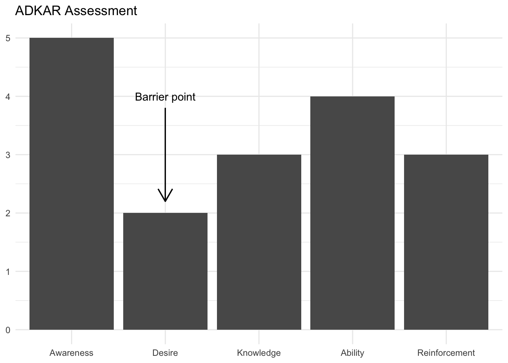

![]()
| Contribuição com elementos do ADKAR | |||||
| Activity | Awareness | Desire | Knowledge | Ability | Reinforcement |
|---|---|---|---|---|---|
| Communications | X | ||||
| Sponsorship | X | X | X | ||
| Coaching | X | X | X | X | X |
| Resistance Management | X | ||||
| Training | X | X | |||
A empresa Prosci é conhecida pelo seu modelo de Gestão de Mudanças chamado ADKAR. Mais recentemente a empresa incluiu dois outros componentes criando um conjunto de modelos para organizar a gestão de mudanças.
Estes componentes são:
- Um ciclo de vida:
- O ciclo de vida de gestão de mudanças está organizado em 3 fases e descreve processos gerais por fase.
- O modelo PCT (Prosci’s Change Triangle):
- O PCT é basicamente um modelo de governança que descreve como a Gestão de Mudanças deve interagir com a liderança corporativa e com o projeto responsável pela implementação da mudança.
- O modelo ADKAR
- Na visão da Prosci a mudança é um processo individual composto por 5 elementos cujas iniciais formam a sigla ADKAR: Awareness, Desire, Knowledge, Ability and Reinforcement.
Há poucas referências sobre a aplicação do framework Prosci para a gestão de mudanças. A maior parte destes referências são da própria Prosci na forma de blogs ou white papers. Neste post faço um resumo dos principais conceitos confome a referências listadas ao final.
Neste post vou resumir as principais características do modelo ADKAR segundo descrito em (Hiatt 2006).
ADKAR
O modelo ADKAR é descrito Jeff Hiatt como:
The ADKAR model presented in this book is a framework for understanding change at an individual level. (…) The ADKAR model has five elements or objectives (…) It is useful to think of these elements as building blocks. All five elements must be in place for a change to be realized. (Hiatt 2006, pg 1)
Os 5 elementos do ADKAR são apresentados conforme:
A (Awareness) Conscientização da necessidade de mudança.
D (Desire) Desejo de apoiar a participar da mudança.
K (Knowledge) Conhecimento de como mudar.
A (Ability) Capacidade de implementar habilidades e conhecimentos necessários
R (Reinforcement) Reforço para sustentar a mudança
O framework ADKAR considera também que estes 5 elementos possuem um encadeamento lógico:
The elements of the ADKAR model fall into the natural order of how one person experiences change. Desire cannot come before awareness because it is the awareness of the need for change that stimulates our desire or triggers our resistance to that change. Knowledge cannot come before desire because we do not seek to know how to do something that we do not want to do. Ability cannot come before knowledge because we cannot implement what we do not know. Reinforcement cannot come before ability because we can only recognize and appreciate what has been achieved. (Hiatt 2006, pg 3).
Desta forma, a mudança pode ser obtida através do desenvolvimento em cada indivíduo de cada um dos elementos obedecendo a sequência lógica.
Importante destacar que o modelo ADKAR é um modelo de gestão de mudança dentro da ótica do indivíduo:
ADKAR represents the essential elements of change for a single person (Hiatt 2006, pg 43)
### Táticas
O modelo sugere 5 tipos de atividades que colaboram para o desenvolvimento dos elementos ADKAR, conforme mostrado na figura na Table 1 (Hiatt 2006, pg 46)
O modelo sugere táticas que podem ser utilizadas para o desenvolvimento de cada um dos elementos conforme listado a seguir:
Awareness
Comunicação Efetiva
Patrocínio Executivo
Coaching por gerentes e supervisores
Acesso facilitado a informações sobre o negócio
Desire
Patrocinar efetivamente a mudança com os funcionários
Prepare os gerentes para serem líderes da mudança
Avalie os riscos e antecipe a resistência
Envolva os funcionários no processo da mudança
Alinhar programas de incentivo
Knowledge
Treinamento efetivo e programas de educação
Auxiliares de trabalho
Coaching individual
Grupos de Usuários e fóruns
Ability
Envolvimento diário dos supervisores
Acesso a especialistas no assunto
Monitoramento de performance
Exercícios práticos durante o treinamento
Reinforcement
Celebrações e reconhecimentos
Premiações
Feedback dos empregados
Sistemas de auditoria e de medição de performance
Sistemas para distribuição de responsabilidades
Participantes chaves
O modelo também sugere o grau de influência de participantes-chaves durante a execução da mudança conforme mostrado na Table 2:
| Key Players Mapping | |||||
| Key Player | Awareness | Desire | Knowledge | Ability | Reinforcement |
|---|---|---|---|---|---|
| Primary Sponsor | X | X | X | ||
| Leadership Coallision | X | X | |||
| Managers and supervisors | X | X | X | X | X |
| HR and training | X | X | |||
| Project team | X | X | |||
Medições
Por fim o modelo ADKAR propõe que o estado de aderência do público alvo da mudança seja medido através de pesquisas questionando numa escala de 1 a 5 conforme mostrado na Figure 1.

De acordo com o modelo ADKAR a medição dos pontos com menor aderência indicariam “barreiras” para a aceitação da mudança, as quais deveriam ser trabalhadas e eliminadas.
Conclusão
Apresentei aqui um resumo das principais ideias do modelo ADKAR da Prosci. Uma avaliação destas ideias e da aplicabilidade das mesmas pode ser encontrada neste link.
References
Hiatt, Jeff. 2006. ADKAR: A Model for Change in Business, Government, and Our Community. 1st ed. Loveland, Colorado: Prosci Learning Center Publications.
Citation
BibTeX citation:
@misc{abreu2022,
author = {Marcos Abreu},
title = {Gestão de Mudanças com ADKAR},
date = {2022-11-09},
url = {https://abreums.github.io/posts/2022-11-09-ADKAR/},
langid = {pt-br}
}
For attribution, please cite this work as:
Marcos Abreu. 2022. “Gestão de Mudanças com ADKAR.”
November 9, 2022. https://abreums.github.io/posts/2022-11-09-ADKAR/.